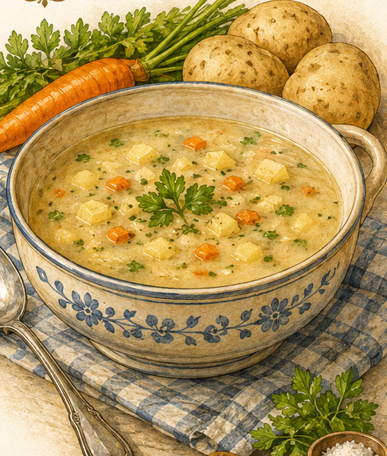

Kartoffelsuppe
Eine schlichte Kartoffelsuppe mit Suppengemüse und gebräunten Zwiebelringen aus Friedas überlieferter Rezeptsammlung.

Originale Überlieferung
„Kartoffelsuppe. 1½ Pfd. Kartoffeln werden in Würfel geschnitten und in einen Topf mit Inhalt von 2 l Wasser gegeben. Alsdann fügt man feingeschnittenes Suppengemüse hinzu und Salz nach Geschmack. Vor dem Fertigmachen läßt man einige Zwiebelringe bräunen und schüttet dieselbe in die Suppe. Nach Belieben kann man auch 80 grm Mehl anrühren und kann dieses in die Suppe schütten.“
Moderne Übertragung
Die Kartoffeln werden gewürfelt und zusammen mit fein geschnittenem Suppengemüse in Salzwasser gekocht. Kurz vor dem Servieren kommen in Fett gebräunte Zwiebelringe hinzu. Wer die Suppe kräftiger binden möchte, rührt zusätzlich Mehl mit kaltem Wasser glatt und gibt es unter Rühren in die Suppe.
Zutaten
- 750 g Kartoffeln
- 2 l Wasser
- Suppengemüse
- Salz
- 1 kleine Zwiebel
- etwas Fett zum Bräunen
- optional 80 g Mehl und etwas kaltes Wasser zum Anrühren
Zubereitung
- Die Kartoffeln schälen und in Würfel schneiden.
- Kartoffeln und fein geschnittenes Suppengemüse in 2 Litern Salzwasser weich kochen.
- Die Zwiebel in Ringe schneiden, in etwas Fett goldbraun braten und kurz vor dem Servieren in die Suppe geben.
- Für eine gebundene Variante das Mehl mit wenig kaltem Wasser glatt rühren, unter Rühren in die Suppe geben und einige Minuten köcheln lassen.